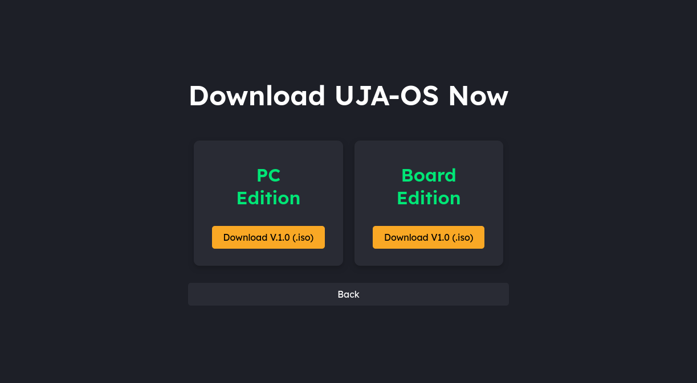

Welcome to the UJA-OS Installation Guide
Installing UJA-OS is the first step toward transforming your low-end devices into high-performance educational tools. Based on the reliable Fedora Linux, UJA-OS provides a seamless experience tailored for schools and institutions. Let's walk through the installation process together!
Why Choose UJA-OS?
UJA-OS is designed specifically for educational environments. Our operating system optimizes performance for low-end hardware, ensuring smooth operation without compromising user experience. Here are some reasons to choose UJA-OS:
- Optimized Performance: Built to run efficiently even on older hardware, making it ideal for schools.
- User-Friendly Interface: An intuitive desktop experience that’s easy to navigate for both students and teachers.
- Regular Updates: Continuous improvements and security enhancements to keep your system safe and up-to-date.
- Customizability: Tailor the environment to fit your needs with custom themes, icons, and settings.
System Requirements
Before you begin the installation, please ensure your hardware meets the following minimum requirements:
- 1 GHz processor or faster
- 2 GB RAM (4 GB recommended for optimal performance)
- 15 GB of free disk space
- Bootable USB or DVD drive
Having these specifications will ensure a smooth installation and operational experience.
Step 1: Download UJA-OS
Begin by downloading the latest version of UJA-OS from our official website. The ISO file will be your installation medium. Make sure to choose the version that suits your architecture (32-bit or 64-bit). Here's how to do it:
- Visit our official download page.
- Select the appropriate version of UJA-OS for your device.
- Click the download button and wait for the file to finish downloading. 
Step 2: Create a Bootable USB or DVD
Once the ISO file is downloaded, you need to create a bootable USB or DVD. Follow these steps:
- If using a USB drive, ensure it's at least 8 GB and formatted. You can use tools like Rufus for Windows or Etcher for macOS and Linux.
- Open the tool and select the downloaded UJA-OS ISO file.
- Select your USB drive or DVD as the target device.
- Click "Start" to create your bootable media.

Step 3: Boot from USB or DVD
Insert the bootable USB or DVD into your computer and restart. You may need to change your BIOS settings to boot from USB or DVD. Follow these steps:
- Restart your computer and enter the BIOS setup (usually by pressing F2, F10, or DEL key during startup).
- Look for the boot menu and set your USB or DVD as the primary boot device.
- Save changes and exit the BIOS setup.
- Your computer should now boot into the UJA-OS installer.
Step 4: Install UJA-OS
Once the UJA-OS installer loads, follow the on-screen instructions:
- Select your preferred language and click "Continue."
- Choose your installation type (clean installation or dual boot).
- Allocate disk space for UJA-OS as required.
- Click "Install" and wait for the process to complete.
- Once done, restart your computer and remove the USB or DVD when prompted.

Step 5: Post-Installation Setup
After installation, you may want to set up your system preferences:
- Create a user account and set up a password.
- Update the system by running the software updater.
- Explore the application store to download essential software for your needs.